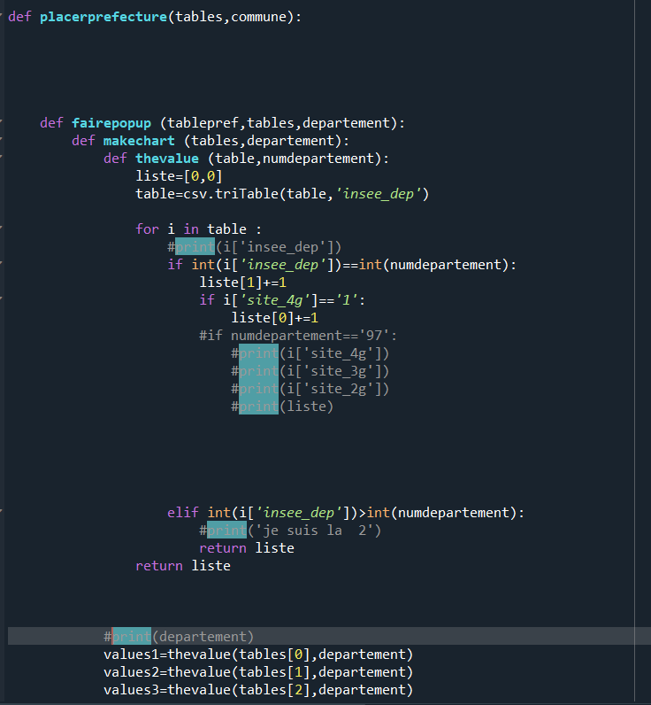
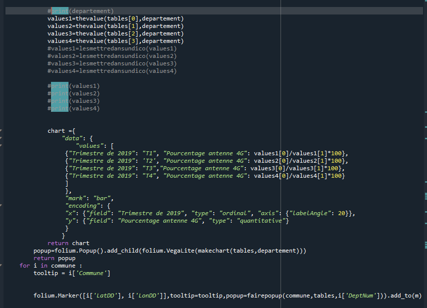
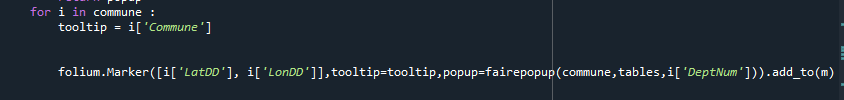
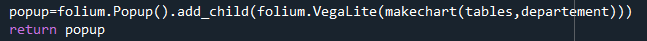
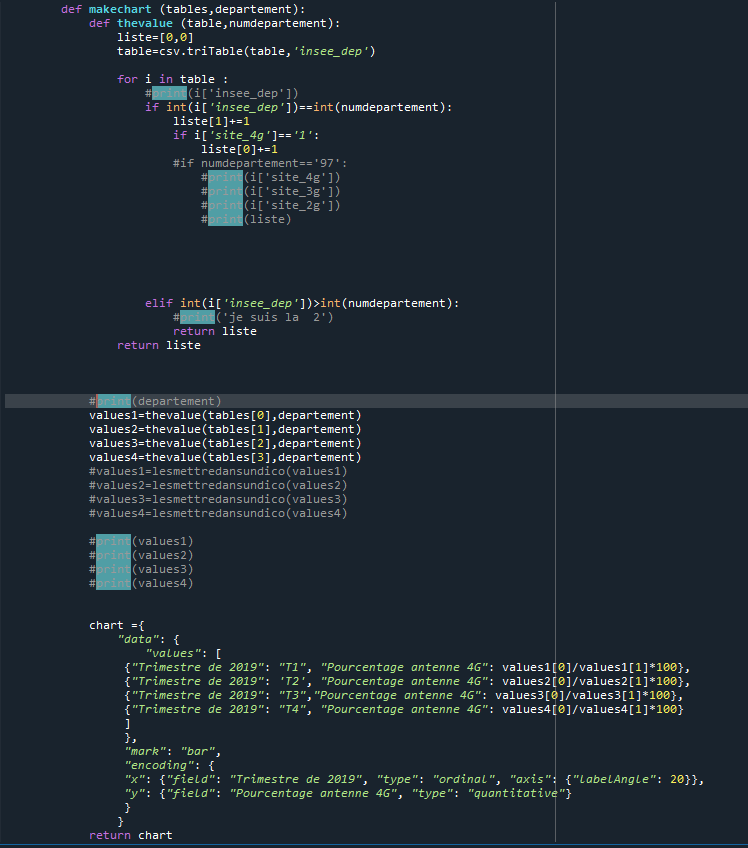

Bienvenu sur la page de presentation du projet realise par moi-meme. Ce projet consistais à trouver une base de donne ou plusieurs base de donnes pour les exploite de facon temporelle et geographique.
J'ai choisi pour ma part de presenter un projet concernant l'installation des antennes de reseau mobile et plus particulierement à leur equipement au niveau donne mobile.
Pour ce projet j'ai utilise 5 tableau de 2 base de donnee :
Ces bases de donnes sont toutes les 2 issues du cite du gouvernement
La demarche de mon projet a ete de chercher des bases de donnes puis de reflechir a leur utilisation, j'ai choisi celle-ci car je trouve le sujet tres contemporain, à l'approche de la 5G, creant plusieurs polemique , on peut se demander si les technologies inferieur sont deja implante en France.
Mon projet permet donc selon mes objectifs de repondre au question suivantes :
Cette carte est realise grace a la bibliotheque folium, et a la bibliotheque de lecture de CSV creer en classe.
Le programme se decoupe en 2 partie
Nous allons nous interesse a la seconde phase
 Voici la fonction se nommant 'placerlesprefecture' qui est la partie d'exploitation des tableaux. On observe qu'elle est faite d'une boucle bornee, qui place toutes les prefectures de france en leur ajoutant en tooltip le nom de la prefecture et en popup un graphique defini par la fonction fairepopup.
La fonction faire popup est la plus importante, comme son nom l'indique elle consiste a realise le graphique affiche en popup

Elle est constitue d'une seule instruction etant l'attribution de la valeur de popup qui sollicite les autres fonctions presente pour les valeurs qui sont rentre dans l'instruction de l'extension Vegalite de folium
On voit donc que la valeur entre dans le graphique est issu de la fonction 'makechart' qui realise le fichier du format voulu par Vegalite, en y associant les valeurs trouve par la fonction presente dans 'makechart', la fonction the value, qui consiste a chercher les antennes d'un departement voulu dans les tableaux de releve trimestrielle pour compter le nombre d'antenne emettant de la 4G et le nombre total d'antenne dans ce departement pour realiser le pourcentage.
Ce projet est fonctionnel mais ne represente pas totalement ce que je voulais faire
J'espere que vous apprecierez mon projet et merci d'y avoir passe un peu de temps.